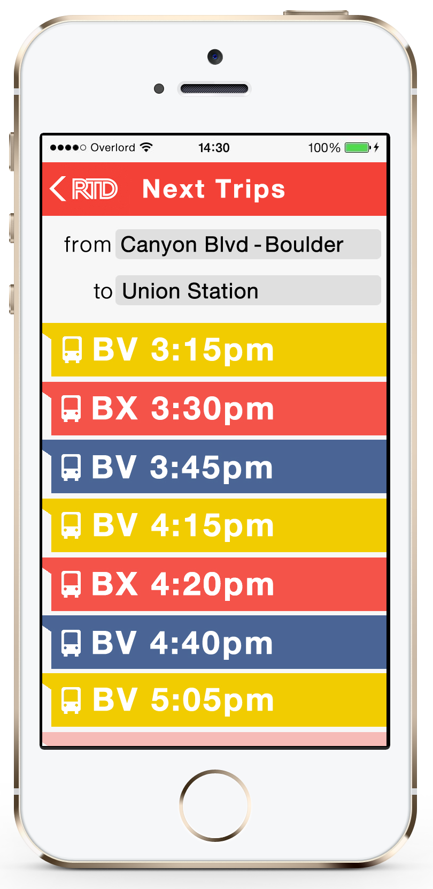
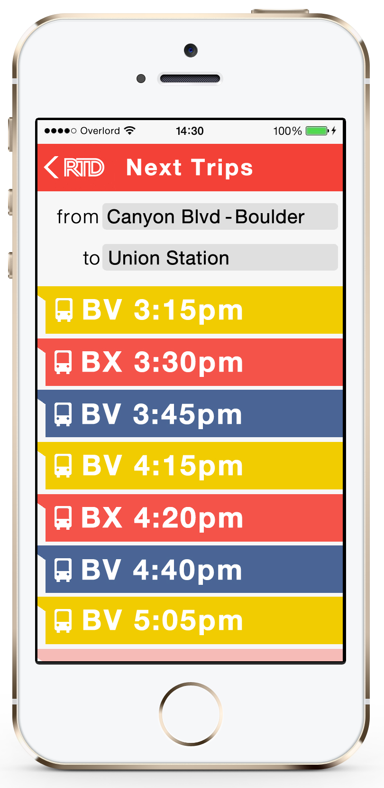

IOOS - Integrated Ocean Observing System
Visit Live Site Project Involvement:- UI design
- Interaction design
- Development
IOOS, a government ocean observation agency needed a site redesign that could accommodate a large amount of content as well as employ new interactive features. The new IOOS site brings a visual and functional update to the agency's online presence to engage and inform visitors.
Schaefer Financial Management
Visit Live Site Project Involvement:- Development
- Interaction design
Schaefer Financial Management wanted to set themselves apart from other financial services firms with a clean and modern web presence. Their new website employs a modern look with easy access to client login features via simple interactions and affordances.
Pauls Corporation
Visit Live Site Project Involvement:- Development
- UI design
The Pauls Corporation is a large real estate firm that seeks to show their properties and agents on their website. This site brings a refined look to showcase value and company robustness while giving visitors a sense of the company's properties.
Rocky Mountain Vibrational Healing
Project Involvement:- UI design
- Development
- Interaction design
I worked with a client specializing in accupunture and traditional Chinese medicine to create a site that would appeal to his market as well as clearly explain several different areas of practice. The site focuses on deliviring a manageable amount of information while encompassing several different areas of the practice.
Freight Logistics
Visit Live Site Project Involvement:- Development
This site serves a global market and is translated into several languages for international users. I recreated images provided by the client to display with text and pure CSS so that the entire site could be translated into any language. I included custom forms to support shipping tracking information as well as displaying the company RSS feed.
Barkly Mobile App
Barkly is a mobile app for dog owners to locate parks, trails, dog-friendly bars and restaurants, and pet supply stores based on location. All of the locations displayed on Barkly are dog-friendly, making it an easy way to find the best places to take your pooch. Screens displayed below are a list of dog-friendly bars and breweries, a detail page for a dog-friendly brewery, and nearby hikes.


RTD Mobile App Design Concept
This is a concept for a mobile app for RTD, the Denver-Boulder metro transit system. Screen mockups show next trips loading with bus line and time until departure; detail screen shows fare info, walking distance to stop, and trip duration. Interaction elements include pull-down to refresh, scroll down to load more trips, and an autofill form for origin and destination fields. Color palette of red, blue, and gold reflects the Colorado state flag.


 

Local.ly Site Concept
This is a concept for Local.ly, a website that displays local farms, food producers, and farmers' markets around a given location. Screen mockups include a home page for the mobile site, search results for local farmers' markets, a drop-down autofill form for location, and a detail page.